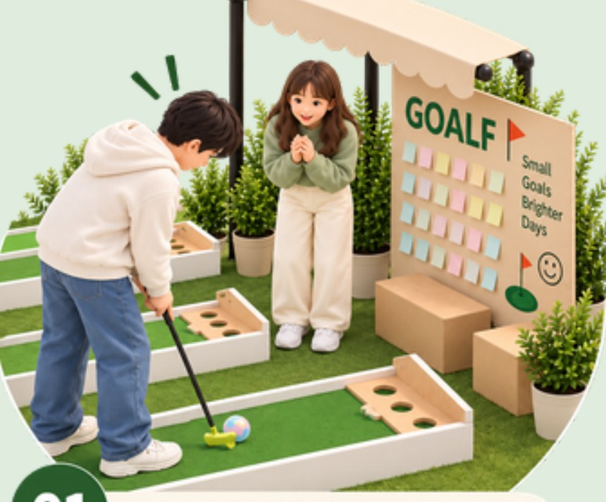
Play Together
Friends, classmates and passers-by can play the mini-golf course together and enjoy a short break in the city.
University of Utah · Urban Ecology Park(ing) Day Project · Yeonsu-gu, Songdo
Write a goal, take a shot.
A mini-golf wish capsule that turns one parking space into a place to pause, play and leave a small goal behind.
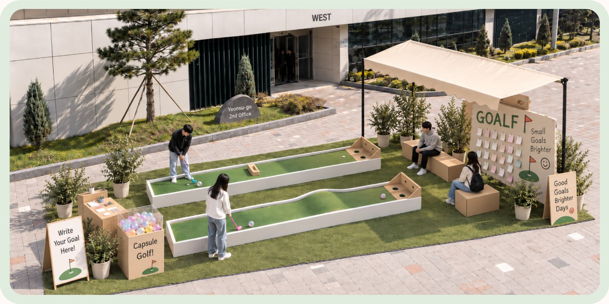
GO(A)LF combines a wish activity with a simple mini-golf experience. Participants write down a personal goal or wish, place it inside a gatchapon capsule, and then use that capsule as the ball in the mini-golf course.
The parking space stops being storage for a car and becomes a short, generous pause in the middle of the street — something to play, something to read, somewhere to sit.
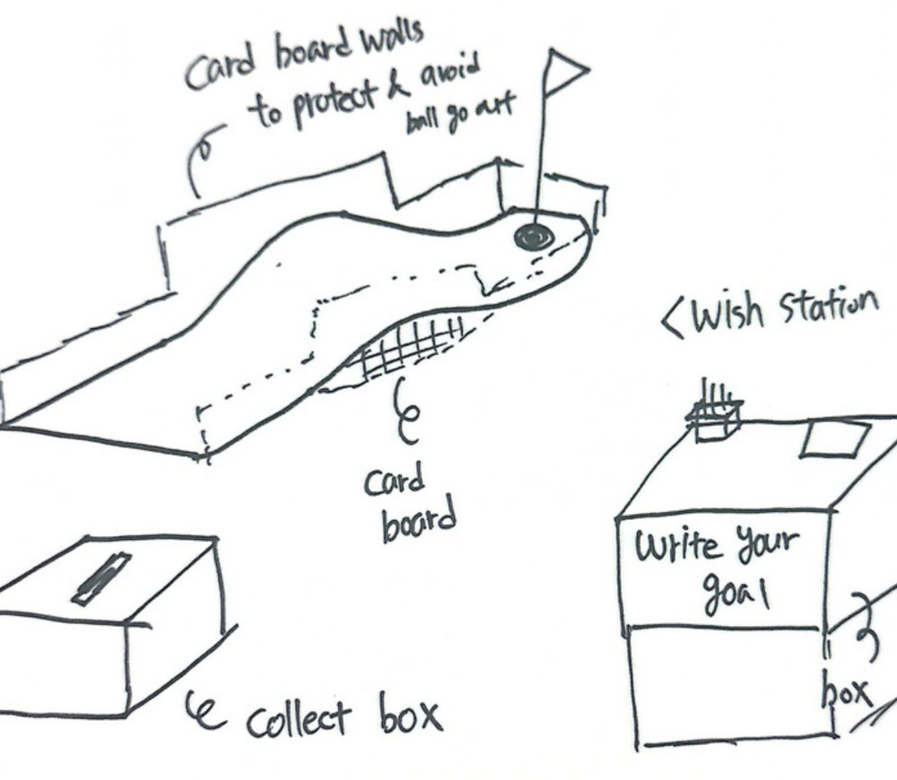
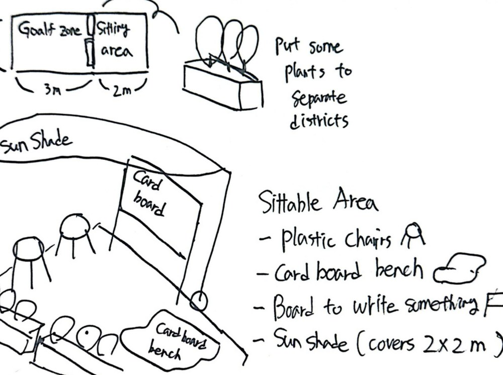
Site
Yeonsu-gu 2nd Office
West frontage, Songdo
Footprint
5 × 2 m
one parking bay
Courses
Two
3.0 × 0.5 m
Built from
Cardboard
cut and glued by hand
No instructions needed — the course explains itself.
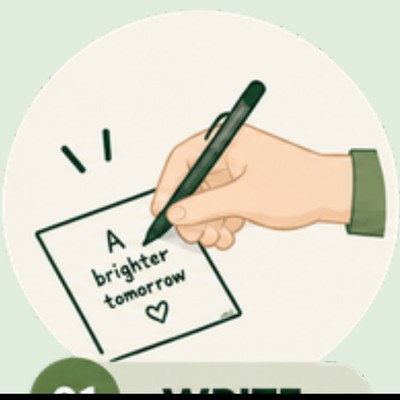
Write a personal goal or wish on a small slip at the wish station.
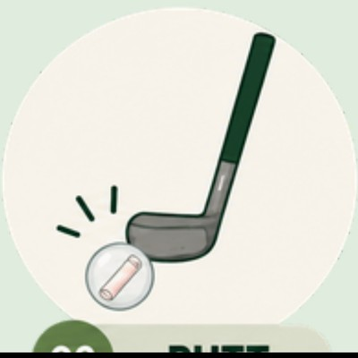
Place the note inside a gatchapon capsule and play it down the course.
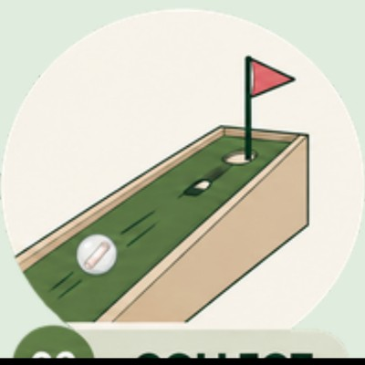
Complete the course and drop the capsule into the collection box.
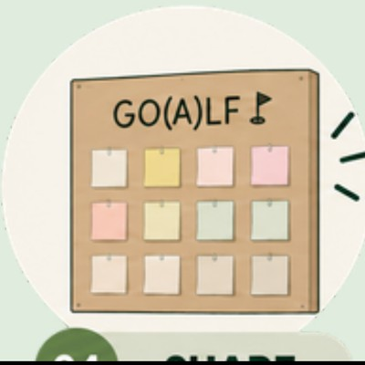
Selected wishes are displayed on the GO(A)LF board for everyone passing by.

Friends, classmates and passers-by can play the mini-golf course together and enjoy a short break in the city.
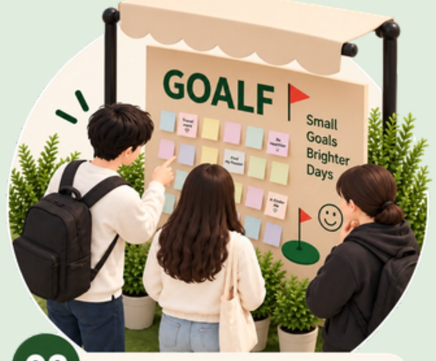
People read each other's wishes on the GO(A)LF board, find inspiration, and start conversations.
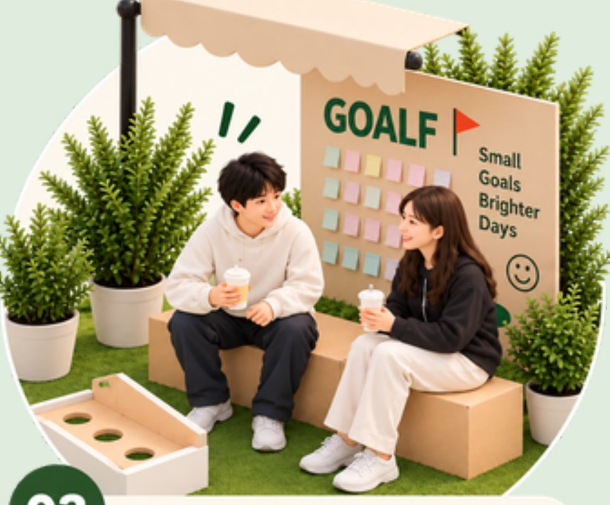
The shaded seating area offers a space to relax, chat and connect with others in a greener, friendlier street.
← swipe →
Everything fits inside a single 5 × 2 m parking bay.
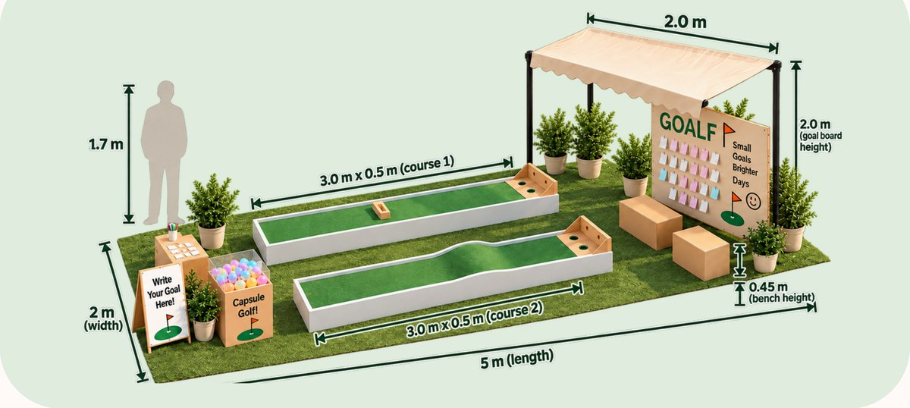
Two sub-assemblies, both cut and glued by hand.
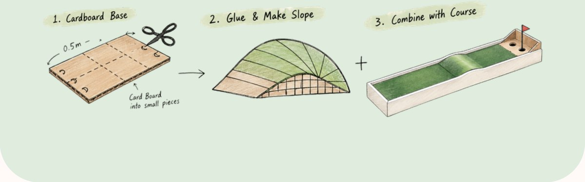
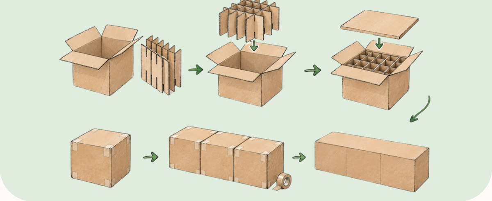
Cut the 0.5 m wide base into small pieces.
Fan the pieces out and glue them into a rise.
Lay the putting mat over the slope and join the lane.
Pack boxes with rolled tubes on end, close them, line them up.
Small materials, big fun!
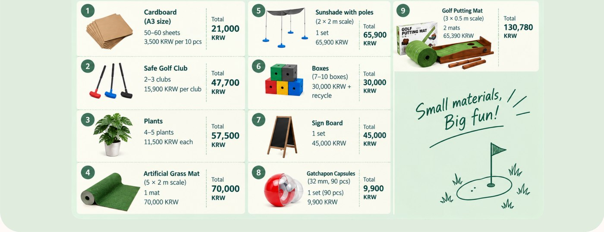
01 Cardboard
21,000A3 · 50–60 sheets
02 Safe Golf Club
47,7003 clubs
03 Plants
57,5005 plants
04 Grass Mat
70,0005 × 2 m, 1 mat
05 Sunshade
65,9002 × 2 m, 1 set
06 Boxes
30,0007–10 boxes
07 Sign Board
45,0001 set
08 Capsules
9,90032 mm · 90 pcs
09 Golf Putting Mat
130,7803 × 0.5 m · 2 mats
From an empty bay to a finished street room.
Clean the ground and roll out the 5 × 2 m artificial grass mat.
Place both courses, the capsule stand and the "write your goal" desk.
Set plants along the edges to separate the room from moving traffic.
Install the canopy and cardboard benches for a comfortable sitting area.
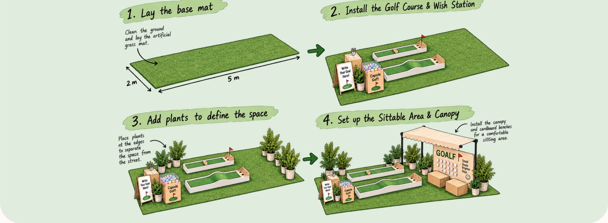
Both sheets as submitted.
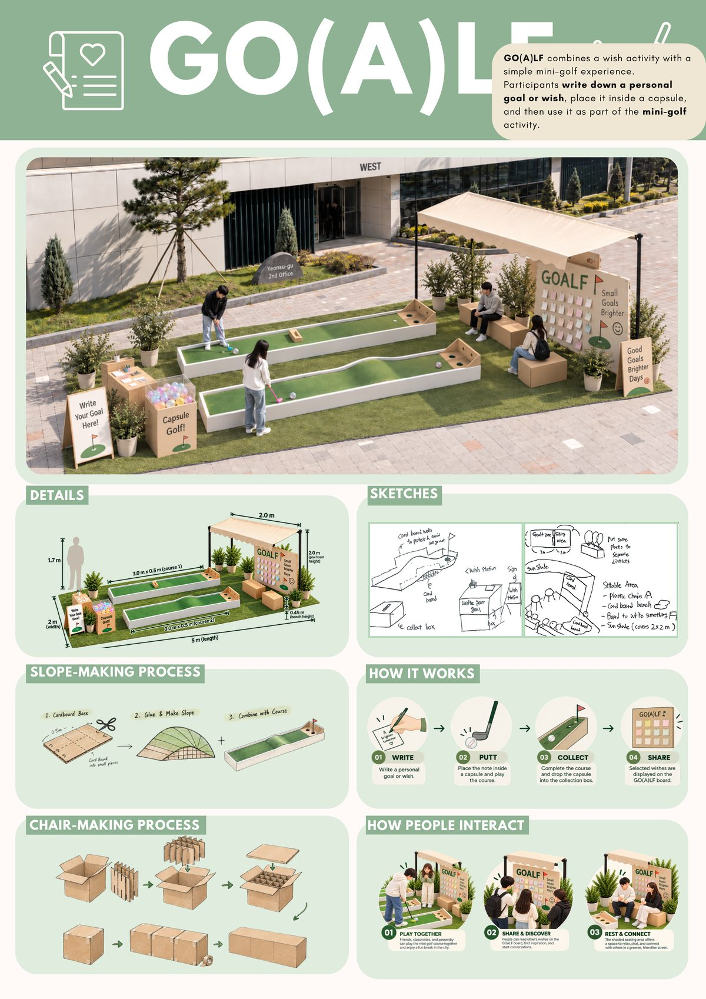
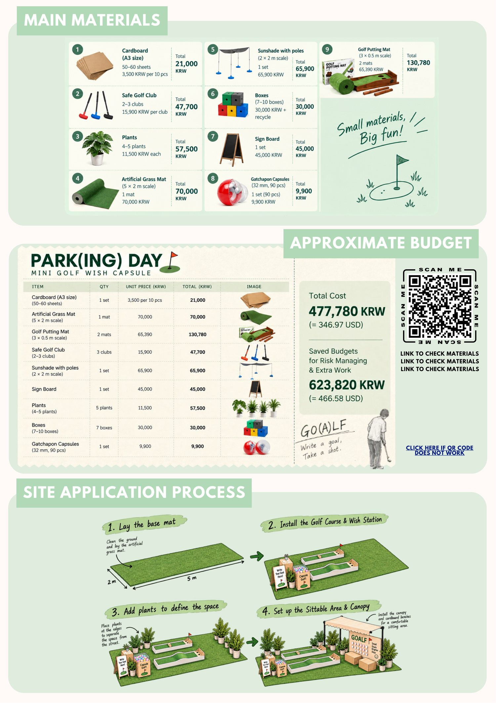
All prices in KRW, sourced online.
| Item | Qty | Total |
|---|---|---|
| CardboardA3, 50–60 sheets | 1 set | 21,000 |
| Artificial Grass Mat5 × 2 m | 1 mat | 70,000 |
| Golf Putting Mat3 × 0.5 m | 2 mats | 130,780 |
| Safe Golf Club2–3 clubs | 3 clubs | 47,700 |
| Sunshade with Poles2 × 2 m | 1 set | 65,900 |
| Sign Board | 1 set | 45,000 |
| Plants11,500 each | 5 plants | 57,500 |
| Boxes7–10 boxes + recycle | 7 boxes | 30,000 |
| Gatchapon Capsules32 mm, 90 pcs | 1 set | 9,900 |
| Total | 477,780 |
Total cost
477,780KRW ≈ 346.97 USD
Saved for risk & extra work
623,820KRW ≈ 466.58 USD
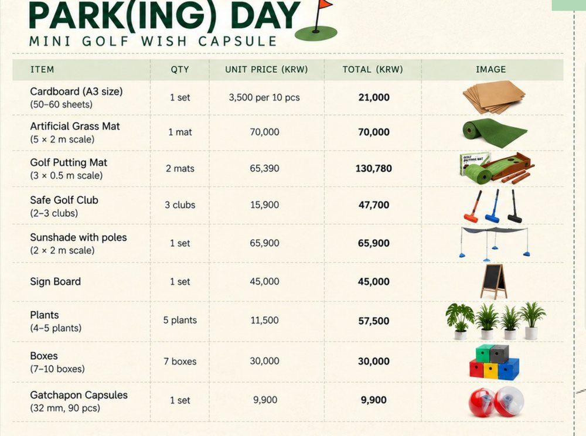
Small goals,
brighter streets.